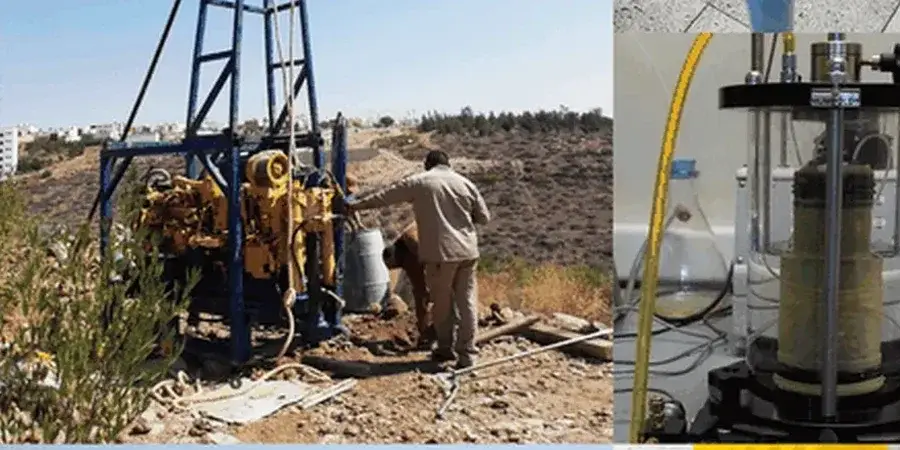

Notre bureau d'Annecy propose une gamme complète de prestations géotechniques, depuis la reconnaissance des sols jusqu'à la conception de fondations et le suivi d'exécution. Nous accompagnons les projets de construction, d'aménagement et de rénovation sur l'ensemble du bassin annécien. Notre approche intègre la spécificité des sols locaux pour garantir la sécurité et la pérennité des ouvrages, tout en respectant les normes en vigueur. Nous réalisons des études de sol et des diagnostics approfondis pour tous types de structures.

Caractéristiques du service à Annecy
Field demonstration
Conditions géotechniques locales à Annecy
Notre équipe justifie d'une expérience régionale consolidée dans le bassin annécien, avec une connaissance fine des formations glaciaires et molassiques locales. Nous disposons d'un laboratoire calibré pour réaliser des essais de cisaillement et de consolidation, et nous produisons des rapports conformes aux exigences du DTU et des assurances. Notre collaboration étroite avec les bureaux de contrôle et les collectivités locales assure une intégration fluide des études dans le processus de projet.
Nos services
Questions courantes
Quels sont les risques géologiques spécifiques à Annecy ?
Les principaux risques incluent les glissements de terrain sur les pentes des Bauges et du Semnoz, les tassements dans les argiles lacustres compressibles, et les remontées de nappe dans les zones basses près du lac. Un aléa sismique modéré (zone 3) doit également être pris en compte. Une étude géotechnique préalable permet de cartographier ces aléas et de dimensionner les ouvrages en conséquence.
Quelle est la profondeur typique des fondations dans la région d'Annecy ?
La profondeur varie selon la nature du sol. Dans les zones de moraine compacte, des fondations superficielles à 1-2 mètres suffisent souvent.
Quelles normes régissent les études géotechniques en France ?
La norme de référence est la NF P 94-500, qui définit les missions géotechniques (G1 à G5). Pour le calcul, on applique l'Eurocode 7 (NF EN 1997) et ses annexes nationales. Pour la sismicité, l'Eurocode 8 (NF EN 1998) est obligatoire. Les essais in situ et en laboratoire suivent les normes NF P 94-xxx et les standards CEN.
Quels types de projets nécessitent une étude géotechnique à Annecy ?
Tous les projets de construction, qu'il s'agisse de maisons individuelles, d'immeubles collectifs, de bâtiments publics, d'infrastructures routières ou d'aménagements paysagers. Les zones à risque (pentes, bords de lac, anciennes carrières) exigent une attention particulière. Même une extension légère peut nécessiter une reconnaissance si le sol est hétérogène.